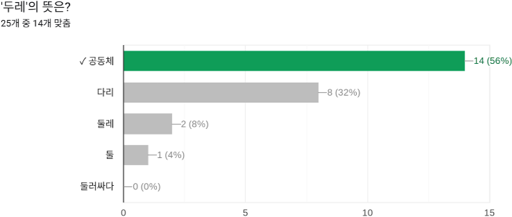
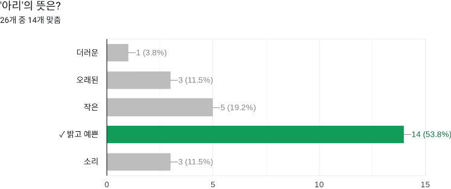
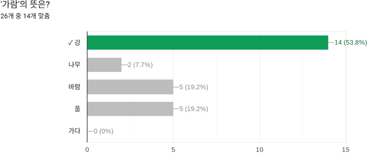
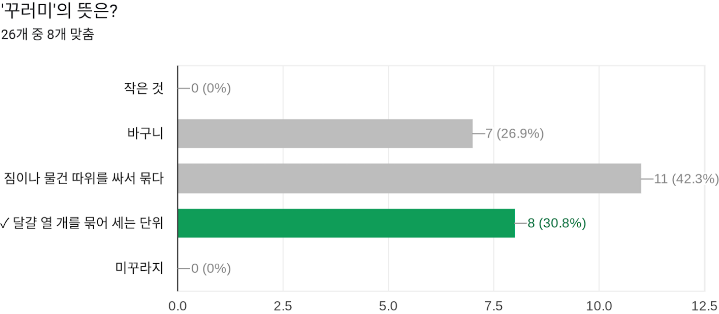
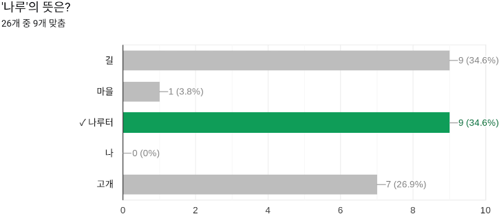

-

‘두레’라는 단어는 전통적으로 농촌 사회에서 공동 노동을 위해 구성된
협동체를 의미하며, 이러한 역사적 배경 덕분에 공동체의 뜻을 가지고 있다.
-

‘아리’라는 단어가 “아리땁다”라는 표현을 통해 사용되는 경우가 있어
사람들에게 익숙함을 준 것이 영향을 미쳤을 것이다.
-

‘가람’이라는 단어는 일반적으로 사용되지 않지만 강과 발음이 비슷하여 많은 사람들이
맞췄을것으로 생각한다. ‘가다’라는 뜻이 하나도 나오지 않은 것이 의외의 결과였다.
-

꾸러미는 설문을 진행했던 단어 중에 가장 낮은 정답률을 기록하였다. 게다가 원래의
정답인 ‘달걀 열 개를 묶어 세는 단위’보다 ‘짐이나 물건 따위를 싸서 묶다’가 더 많은 선택을
받았는데 그 이유를 분석해 보니 평소에 우리가 꾸러미라는 말을 과자 꾸러미,
과일 꾸러미처럼 한 가지 테마의 상품을 묶어서 판매하는 상품이라는 의미로 쓰이기 때문인 것 같다.
-

나루라는 말을 보면 여의나루역이 떠오른다는 의견이 많았는데 여의나루역 주변에
거리(길)이 많아 여의도에 있는 길이라는 의미로 많이 받아들인 것 같다.